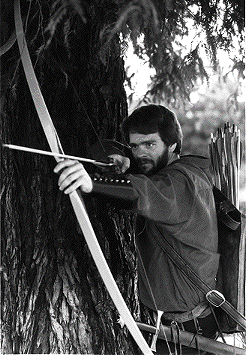

Happy notes for sound buffs: As you'll see from the sample code provided on the
Developer CD Series disc, you can make your Macintosh play and record sounds at the
same time, simply by using double buffering to record into one buffer while playing a
second buffer, and then flipping between the buffers. If you want to take things a few
steps further, pull out elements of this code and tailor them to suit your own acoustic
needs.
We all know that the Macintosh is a sound machine, so to speak, but with a little
clever programming you can turn it into an echo box as well. The sample
2BufRecordToBufCmd included on theDeveloper CD Series disc is just a small
application (sans interface) that demonstrates one way to record sounds at the same
time that you're playing them. There are other ways to achieve the same goal, but my
purpose is to educate you about the Sound Manager, not to lead you down the definitive
road to becoming your own recording studio.
In addition to the main routine, 2BufRecordToBufCmd includes various setup routines
and a completion routine. For easy reading, I've left out any unnecessary code out of
this article.
Before I get into the sample code itself, here are a few of the constants you'll run into
in the application.
GETTING A HANDLE ON IT
The kMilliSecondsOfSound constant is used to declare how many milliseconds of sound
the application should record before it starts to play back. The smaller the number of
milliseconds, the more quickly the sound is played back. This constant is used to
calculate the size of the 'snd ' buffer handles (just the data). Depending on the sound
effect you're after, kMilliSecondsOfSound can range from 50 milliseconds to 400,000
or so. If you set it below 50, you risk problems: there may not be enough time for the
completion routine to finish executing before it's called again. On the high end of the
range, only the application's available memory limits the size. The smaller the value,
of course, the faster the buffers fill up and play back, and the faster an echo effect
you'll get. A millisecond value of 1000 provides a one-second delay between record and
echo, which I've found is good for general use. You'll want to experiment to find the
effect you like. (Beware of feedback, both from your machine and from anyone who's in
close enough proximity to "enjoy" the experimentation secondhand.)
YOUR HEAD SIZE, AND OTHER #DEFINES
The next three constants (kBaseHeaderSize, kSynthSize, and kCmdSize) are used to
parse the sound header buffers in the routine FindHeaderSize. kBaseHeaderSize is the
number of bytes at the top of all 'snd ' headers that aren't needed in the application
itself. While the number of bytes isn't really ofinterest here, you need to parse the
header in order to find the part of the sound header that you'll pass to the bufferCmd.
How much you parse off the top is determined by the format of the header and the type
of file; for the purposes of this code, however, all you need to be concerned with are
the 'snd ' resources. The second constant, kSynthSize, is the size of one 'snth'. In the
calculations of the header, I find out how many 'snth's there are, and multiply that
number by kSynthSize. The last constant, kCmdSize, is the size of one command, which
is used in the same way as kSynthSize. (These equations are derived fromInside
Macintosh Volume VI, page 22-20.)
ERROR CHECKING WITH EXITWITHMESSAGE
2BufRecordToBufCmd includes error checking, but only as a placeholder for future
commercialization of the product. If the present code detects an error, it calls the
ExitWithMessage routine, which displays a dialog box that tells you more or less
where the error occurred and what the error was. Closing this dialog box quits the
application, at which point you have to start over again. Note that calling
ExitWithMessage at interrupt time could be fatal, since it uses routines that might
move memory. For errors that could occur at interrupt time, DebugStr is used instead.
Use of the sound input driver is fairly well documented inInside Macintosh Volume VI,
Chapter 22 (pages 22-58 through 22-68 and 22-92 through 22-99), but here's a
little overview of what 2BufRecordToBufCmd does at this point in the routine, and
why. When you use sound input calls at the low level (not using SndRecord or
SndRecordToFile), you need to open the sound input driver. This section of the code
just opens the driver, which the user selects via the sound cdev.
gError = SPBOpenDevice (kDefaultDriver, siWritePermission,
&gSoundRefNum);
To open the driver, you call SPBOpenDevice and pass in a couple of simple parameters.
The first parameter is a driver name. It doesn't really matter what the name of the
driver is; it simply needs to be the user-selected driver, so the code passes in nil
(which is what kDefaultDriver translates into). The constant siWritePermission
tells the driver you'd like read/write permission to the sound input driver. This will
enable the application to actually use the recording calls. The last parameter is the
gSoundRefNum. This parameter is needed later in the sample so that you can ask
specific questions about the driver that's open. The error checking is just to make sure
that nothing went wrong; if something did go wrong, the code goes to ExitWithMessage,
and then the sample quits.
gError = SPBSetDeviceInfo (gSoundRefNum, siContinuous,
(Ptr) &contOnOff);
Continuous recording is activated here to avoid a "feature" of the new Macintosh Quadra
700 and 900 that gives you a slowly increasing ramp of the sound input levels to their
normal levels each time you call SPBRecord. The result in 2BufRecordToBufCmd is a
pause and gradual increase in the sound volume between buffers as the buffers are
being played. Continuous recording gives you this ramp only on the first buffer, where
it's almost unnoticeable.
Now that the sound input driver is open, the code can get the information it needs to
build the 'snd ' buffers. As its name implies, 2BufRecordToBufCmd uses two buffers.
The reason is sound (no pun intended): The code basically uses a double-buffer method
to record and play the buffers. The code doesn't tell the machine to start to play the
sound until the recording completion routine has been called, so you don't have to
worry about playing a buffer before it has been filled with recorded data. The code
also does not restart the recording until the previous buffer has started to play.
INFORMATION, PLEASE
To build the sound headers, you need to get some information from the sound input
driver about how the sound data will be recorded and stored. That's the function of the
GetSoundDeviceInfo routine, which looks for information about the SampleRate (the
number of samples per second at which the sound is recorded), the SampleSize (the
sample size of the sound being recorded--8 bits per sample is normal), the
CompressionType (see "Putting on the Squeeze"), the NumberChannels(the number of
sound input channels, normally 1), and the DeviceBufferInfo (the size of the internal
buffers).
This code (minus the error checking) extracts these values from the sound input
driver.
gError = SPBGetDeviceInfo (gSoundRefNum, siSampleRate,
(Ptr) &gSampleRate);
gError = SPBGetDeviceInfo (gSoundRefNum, siSampleSize,
(Ptr) &gSampleSize);
gError = SPBGetDeviceInfo (gSoundRefNum, siCompressionType,
(Ptr) &gCompression);
gError = SPBGetDeviceInfo (gSoundRefNum, siNumberChannels,
(Ptr) &gNumberOfChannels);
gError = SPBGetDeviceInfo (gSoundRefNum, siDeviceBufferInfo,
(Ptr) &gInternalBuffer);
value = kMilliSecondsOfSound;
gError = SPBMillisecondsToBytes (gSoundRefNum, &value);
gSampleAreaSize = (value / gInternalBuffer) * gInternalBuffer;
Opening the sound input driver gives you the gSoundRefNum. The values siSampleRate,
siSampleSize, siCompressionType, siNumberChannels, and siDeviceBufferInfo are
constants defined in the SoundInput.h file; these constants tell the SPBGetDeviceInfo
call what information you want. The last parameter is a pointer to a global variable.
The SPBGetDeviceInfo call uses this parameter to return the requested information.
The last bit of work the code needs to do before it's ready to start building the 'snd '
headers is to convert the constant kMilliSecondsOfSound to the sample size of the
buffer. To do this, the routine needs to call SPBMillisecondsToBytes and then round
down the resulting value to a multiple of the size of the internal sound buffer. This is
to bypass a bug connected with the continuous recording feature of Apple's built-in
sound input device, which will collect garbage rather than audio data if the recording
buffer is not a multiple of the device's internal buffer. Creating a buffer of the right
size not only avoids this problem, but also enables the input device to more efficiently
record data into your buffer.
Now the code has the information it needs to build the sound buffers. To save code
space, I've made a short routine that builds the buffers and their headers. All the code
has to do is call this routine for each of the buffers it needs and pass in the appropriate
data.
IT'S A SETUP
The first line of code in the SetupSounds routine is fairly obvious. It simply calls the
Memory Manager to allocate the requested handles, based on the known size of the data
buffer and an estimated maximum size for the header, and does some error checking
(see the code itself). Then, if the handle is good, the routine builds the 'snd ' header.
Setting up the sound buffer requires building the header by making a simple call,
SetupSndHeader, to the Sound Manager. There's a small problem with calling
SetupSndHeader only once, however: When you call it, you don't know how big the
sound header is, so you just give the call the buffer, along with a 0 value for the buffer
size. When the call returns with the header built, one of the values in the
header--the one that's the number of bytes in the sample--will be wrong. (The
header size will be correct, but the data in the header will not be.) To correct this, you
simply wait until your recording is complete and then put the correct number of bytes
directly into the header, at which time you'll know how much data there is to play
back. The misinformation in the header won't affect your recording, only the playback.
Once the header's built, the code resets the size of the handle, moves the handle high
(to avoid fragmentation of the heap), and locks it down. It's important to lock down the
handles in this way; otherwise the Sound Manager will move the sound buffers it's
working with out from under itself.
*bufferHandle = NewHandle (gSampleAreaSize + kEstimatedHeaderSize);
gError = SetupSndHeader (*bufferHandle, gNumberOfChannels,
gSampleRate, gSampleSize, gCompression, kMiddleC, 0, headerSize);
SetHandleSize (*bufferHandle, (Size) *headerSize + gSampleAreaSize);
MoveHHi (*bufferHandle);
HLock (*bufferHandle);
The next part of the program allocates and initializes a sound input parameter block,
gRecordStruct. This structure tells the sound input call how to do what the code wants
it to do.
The first instruction is obvious: it simply creates a new pointer into which the
structure can be stored.
gRecordStruct = (SPBPtr) NewPtr (sizeof (SPB));
The recording call will need to know where it can find the open sound input driver, so
next it needs the reference number to the driver (gSoundRefNum). The subsequent
three lines of code inform the recording call how much buffer space it has to record
into. Here, you could either give the call a count value, tell it how many milliseconds
are available for recording, or give it the size of the sound buffer. For this code, it's
easiest to just make the bufferLength the same as the count and ignore the milliseconds
value. The code then tells the recording call where to put the sound data as it's
recorded.
gRecordStruct->inRefNum = gSoundRefNum; gRecordStruct->count = gSampleAreaSize; gRecordStruct->milliseconds = 0; gRecordStruct->bufferLength = gSampleAreaSize; gRecordStruct->bufferPtr = (Ptr) ((*bufferHandle) + gHeaderLength); gRecordStruct->completionRoutine = (ProcPtr) MyRecComp; gRecordStruct->interruptRoutine = nil; gRecordStruct->userLong = SetCurrentA5(); gRecordStruct->error = 0; gRecordStruct->unused1 = 0;
The recording call also needs to know what to do when it's finished recording. Since the
call is done asynchronously, it needs a completion routine. (I'll talk more about this
routine later on.) Youcould leave out the completion routine and just poll the driver
periodically to see if it's finished recording. To do that, you'd repeatedly call the
routine SPBGetRecordStatus, and when the status routine informed you that recording
was finished, you'd restart the recording and play the buffer that had just been filled.
For this code, however, it's better to know as soon as possible when the recording is
done because the more quickly you can restart the recording, the more likely you are
to prevent pauses between recordings.
The userLong field is a good place to store 2BufRecordToBufCmd's A5 value, which
you'll need in order to have access to the application's global variables from the
completion routine. As you can see, the rest of the fields are set to 0. The code doesn't
need an interrupt routine. There's also no point in passing an error back or using the
unused1 field.
You'd need to use an interrupt routine if you wanted to change the recorded sound
before compression, or before the completion routine was called (see "Routine
Interruptions").
TIME TO CHANNEL
Just before the code jumps into the main loop, it needs to open a sound channel. This
generally is not a big deal, but for 2BufRecordToBufCmd, I initialized the channel to
use no interpolation.
gError = SndNewChannel (&gChannel, sampledSynth, initNoInterp, nil);
Interpolation causes clicks between the sound buffers when they're played back to
back, which can be a rather annoying addition to your recording (unless, of course,
you're going for that samba beat).
JUST FOR THE RECORD
To start recording, all the code needs to do now is call the low-level recording routine,
pass in gRecordStruct, and tell it that it wants the recording to occur asynchronously.
gError = SPBRecord (gRecordStruct, true);
The main loop of this code is a simple while loop that waits until the mouse button is
pressed or an error occurs in the recording, at which time the application quits.
/* main loop of the app */ while (!Button() || (gRecordStruct->error < noErr));
ROUTINE COMPLETION
You don't want a completion routine to do much, generally, since it's run at interrupt
time and keeps your system locked up while it's running. There are three parts to this
completion routine, one of which has four parts to itself.
The first part of the completion routine sets its A5 value to be the same as the A5 value
of the application. This gives you access to the application's global variables from the
completion routine.
storeA5 = SetA5 (inParamPtr->userLong);
If the completion routine weren't broken into two parts here, the MPW C compiler
optimization scheme would cause a problem at this point: access to global arrays would
be pointed to in an address register as an offset of A5 before you had a chance to set A5
to your application's A5 value, and you'd get garbage information. Therefore, it's
necessary to restore your A5 value (part 1 of the completion routine) and then call
the secondary completion routine to actually do all the work.
Before the routine does any work, it needs to make sure that there have not been any
problems with the recording. If there were errors, the code drops out of the
completion routine without doing anything.
if (gRecordStruct->error < 0)
return;
Next the routine prepares the header of the buffer, which has just been filled, by
correcting the header's length field. This field needs to be set to the count field of
gRecordStruct, which now contains the actual number of bytes recorded.
header = (SoundHeaderPtr)(*(gBufferHandle[gWhichRecordBuffer]) +
gHeaderSize);
header->length = gRecordStruct->count;
Once the header's been fixed, the code just sends the buffer handle off to the play
routine to play the sound. (See "Play Time" for a full explanation of the play routine.)
PlayBuffer (gBufferHandle[gWhichRecordBuffer]);
The last part of the real completion routine prepares gRecordStruct to start the next
recording. To do this, the code needs to select the correct buffer to record to and
rebuild gRecordStruct to reflect any changes. The macro NextBuffer performs an XOR
on the variable gWhichRecordBuffer to make it either 1 or 0. The changes include
setting the correct buffer to record to and checking to see that the bufferLength is
correct. Once the structure is reset, the code makes the next call to SPBRecord to
restart the recording.
#define NextBuffer(x) (x ^= 1)
gWhichRecordBuffer = NextBuffer (gWhichRecordBuffer);
gRecordStruct->bufferPtr = (*(gBufferHandle[gWhichRecordBuffer]) +
gDataStart);
gRecordStruct->milliseconds = 0;
gRecordStruct->count = gSampleAreaSize;
gRecordStruct->bufferLength = gSampleAreaSize;
err = SPBRecord (gRecordStruct, true);
The last piece of the completion routine resets A5 to what its value was when the
routine started.
storeA5 = SetA5 (storeA5);
PLAY TIME
The code in the PlayBuffer routine is very simple Sound Manager code. All it does is set
up the command parameters and call SndDoCommand. The routine needs to know what
channel to play into and what buffer to play, so the code sets up the local sound
structure by telling it which buffer to play, and sends that local structure to
SndDoCommand along with the necessary channel information (gChannel).
SndDoCommand then plays the sound. The last parameter in the SndDoCommand call,
false, basically tells the Sound Manager to always insert the command in the channel's
queue: if the queue is full, SndDoCommand will wait until there's space to insert the
command before returning.
localSndCmd.cmd = bufferCmd; localSndCmd.param1 = 0; localSndCmd.param2 = (long) ((*bufferHandle) + gHeaderSize); gError = SndDoCommand (gChannel, &localSndCmd, false);
If you wanted to send the sounds to a different machine to be played, you could simply
replace the code in the the PlayBuffer routine with IPC or Communications Toolbox
calls telling a second machine to play the buffers.
Once the code finds the mouse button down or discovers that an error occurred in the
recording and exits the main loop, there's only one last thing to do: clean up. The first
part of cleaning up is to close the sound input driver. Before you can close the driver,
you need to make sure it's not in use; the routine SPBStopRecording stops the
recording.
gError = SPBStopRecording (gSoundRefNum); SPBCloseDevice (gSoundRefNum);
Next you need to dispose of the handles and pointers you've been using. Before sending
them on their way, however, you have to make sure that they have been allocated, so
the code checks to see whether or not the handles and pointer are nil.
for (index = 0; index < kNumberOfBuffers; ++index)
DisposeHandle (gBufferHandle[index]);
DisposePtr ((Ptr) gRecordStruct);
Last but not least, the code disposes of the sound channel for you. Setting the quitNow
flag clears the sound queue before the channel is closed.
gError = SndDisposeChannel (gChannel, true);
So now you know a little bit more about doing basic sound input at a low level. I've
fielded many questions about clicks, pauses between buffers, and so on, which I've
resolved and built into 2BufRecordToBufCmd. The specific techniques I've outlined
here may not apply to what you're interested in doing right now, but if you're using
the sound input driver or are interested in continuous recording, parts of this sample
may be useful to you in some other application. You've heard the saying "take what you
like and leave the rest"? Sound advice (so to speak).
You do need to check two rather critical sound attributes for 2BufRecordToBufCmd.
First of all, your machine must have a sound input driver. There's very little point in
trying to record sounds if the sample is being run on a machine that doesn't have sound
input capabilities. Checking bit 5 of the returned feature variable with the Gestalt
Manager will give you this handy bit of information.
Second, your hardware needs to support stereo sound, since you need one channel for
sound input and one for sound output. Check for this attribute by checking bit 0 of the
returned feature variable.
The following code shows how you can test all of the bits returned in the feature
variable. (I didn't use this code in my sample.)
err = Gestalt (gestaltSoundAttr, &feature);
if (!err) {
if (feature & (1 << gestaltStereoCapability))
//This Macintosh Supports Stereo (test bit 0)
if (feature & (1 << gestaltStereoMixing))
//This Macintosh Supports Stereo Mixing (test bit 1)
if (feature & (1 << gestaltSoundIOMgrPresent))
//This Macintosh Has the New Sound Manager (test bit 3)
if (feature & (1 << gestaltBuiltInSoundInput))
//This Macintosh Has Built-in Sound Input (test bit 4)
if (feature & (1 << gestaltHasSoundInputDevice))
//This Macintosh Supports Sound Input (test bit 5)
}
If you want to use compression for 2BufRecordToBufCmd, keep in mind that the Sound
Manager basically supports three types of sound compression: none at all, which is
what I'm using, and MAC3 and MAC6, which are Mace compression types for 3:1 and
6:1 compression, respectively.
If you set the compression, the sound data is compressed after the interrupt routine is
called (if you have one) and before the Sound Manager internal buffers are moved to
the application's sound buffers.
You have a couple of options for playing back a compressed sound. Either the bufferCmd
or SndPlay will decompress the sounds on the fly. If you need to decompress a sound
yourself, you'll want to call the Sound Manager routine Exp1to3 or Exp1to6
(depending on the compression you were using).
The interrupt routine gives you a chance to manipulate the sound data before any sound
compression is done. For some of the operations that you may want to carry out inside
the interrupt routine, you'll need access to the A5 world of the application, which is
why I stored 2BufRecordToBufCmd's A5 value in the userLong field of
gRecordStruct.For more information about sound interrupt routines, take a look at
Inside Macintosh Volume VI, page 22-63.
Warning: Don't try to accomplish too much in an interrupt routine. In general, you'll
want interrupts to be minimal, and possibly written in assembly language, to avoid
unnecessary compiler-generated code.
RICH COLLYER is just your run-of-the-mill three-year Developer Technical
Support veteran: He's often heard screaming at his computer to the soothing
accompaniment of Blazy and Bob on KOME radio, he's honed his archery skills to a fine
point dodging (and casting) the slings and arrows at Apple, and he actually admits to a
degree from Cal Poly with a specialty in computational fluid dynamics. We let you in
on his outdoor adventures last time he wrote for us and he claims most of his indoor
adventures aren't appropriate develop material, but we have it on good authority that
he lives with carnivorous animals, if that's any clue. He's also a confirmed laserdisc
and CD addict; he keeps promising to start a recovery program for those of us with the
same affliction just as soon as he finishes writing that next sample . . . *
THANKS TO OUR TECHNICAL REVIEWERS Neil Day, Kip Olson, and Jim Reekes,
who burned the midnight oil ripping this code to shreds and putting it back together
again.*